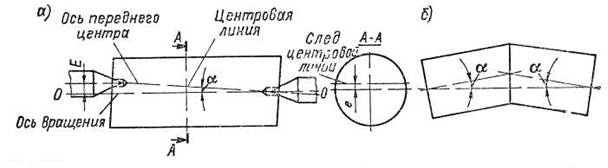
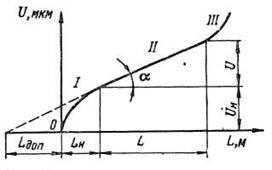
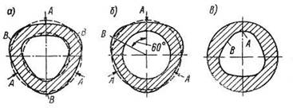

Повышение точности изготовления деталей и сборки узлов увеличивает долговечность и надежность эксплуатации механизмов и машин. Этим объясняется непрерывное ужесточение требований к точности изготовления деталей и машин в целом. Важное значение имеет повышение точности и для процесса производства изделий. Повышение точности исходных заготовок снижает трудоемкость механической обработки, уменьшает размеры припусков на обработку деталей и приводит к экономии металла Получение точных и однородных заготовок на всех операциях технологического процесса является одним из непременных условий автоматизации обработки и сборки.
Повышение точности механической обработки устраняет пригоночные работы на сборке, позволяет осуществить принцип взаимозаменяемости деталей и узлов и ввести поточную сборку, что не только сокращает трудоемкость последней, но также облегчает и удешевляет проведение ремонта машин в условиях их эксплуатации.
При решении проблемы точности в машиностроении технолог должен обеспечить: требуемую конструктором точность изготовления деталей и сборки машины при одновременном достижении высокой производительности и экономичности их изготовления; необходимые средства измерения и контроля фактической точности обработки и сборки; установку допусков технологических межоперационных размеров и размеров исходных заготовок и их выполнение в ходе технологического процесса. Кроме того, технолог должен исследовать фактическую точность установленных технологических процессов и проанализировать причины возникновения погрешностей обработки и сборки.
Под точностью детали понимается ее соответствие требованиям чертежа: по размерам, геометрической форме, правильности взаимного расположения обрабатываемых поверхностей и по степени их шероховатости.
Причинами возникновения систематических и переменных систематических погрешностей обработки заготовок являются: неточность, износ и деформация станков, приспособлений и инструментов; деформация обрабатываемых заготовок; тепловые явления, происходящие в технологической системе и в смазочно-охлаждающей жидкости, а также погрешности теоретической схемы обработки заготовки.
Погрешности изготовления и сборки станков ограничиваются нормами ГОСТов, определяющими допуски и методы проверки геометрической точности станков, т.е. точности станков в ненагруженном состоянии.
Ниже приведены некоторые характеристики геометрической точности (в миллиметрах) станков общего назначения средних размеров.
| Радиальное биение шпинделей токарных и фрезерных станков (на конце шпинделя) | 0,01-0,015 |
| Биение конического отверстия в шпинделе | |
| токарного и фрезерного станков на длине оправки 300 мм | 0,02 |
| вертикально-сверлильных станков на длине оправки 100-300 мм | 0,03-0,05 |
| Торцевое (осевое) биение шпинделей | 0,01-0,02 |
| Прямолинейность и параллельность направляющих токарных и продольно-строгальных станков: | |
| На длине 1000 мм | 0,02 |
| На всей длине | 0,05-0,08 |
| Прямолинейность продольных направляющих и столов фрезерных станков на длине 1000 мм | 0,03-0,04 |
| Параллельность осей шпинделей токарных станков направлению движения кареток: | |
| В вертикальной плоскости на длине 300 мм | 0,02-0,03 |
| В горизонтальной плоскости на длине оправки 300 мм | 0,01-0,015 |
| Перпендикулярность осей шпинделей вертикально-сверлильных станков относительно плоскости столов на длине 300 мм | 0,06-0,10 |
Приведенные ориентировочные данные относятся к станкам нормальной точности (станки группы Н), предназначенным для обработки заготовок средних размеров в пределах допусков 7—9-го квалитетов точности СЭВ. Характеристики геометрической точности, т. е. геометрические погрешности станков более высоких точностных групп, значительно уменьшаются, а трудоемкость и: изготовления резко возрастает.
Погрешности геометрической точности станков полностью или частично переносятся на обрабатываемые заготовки в виде систематических погрешностей. Величина этих систематических погрешностей поддается предварительному анализу и расчету. Например, при непараллельности оси шпинделя токарного станка направлению движения суппорта в горизонтальной плоскости цилиндрическая повёрхность обрабатываемой заготовки, закрепленной в патроне станка, превращается в коническую.
Неперпендикулярность оси шпинделя вертикально-фрезерного станка относительно плоскости его стола в поперечном направлении вызывает непараллельность обработанной плоскости по отношению к установочной, численно равную линейному отклонению от перпендикулярности на ширине заготовки.
При неперпендикулярности оси шпинделя вертикально-фрезерного станка по отношению к плоскости его стола в продольном направлении возникает вогнутость обработанной поверхности, зависящая от угла наклона шпинделя, диаметра фрезы и ширины обрабатываемой поверхности. Вогнутость можно подсчитать аналитически или определить экспериментально.
Биение шпинделей токарных и круглошлифовальных станков, вызываемое овальностью подшипников и опорных шеек шпинделей, искажает форму обрабатываемой заготовки в поперечном сечении. Овальность шеек шпинделей в этом случае переносится на заготовку, так как при ее обработке шейки шпинделей все время прижимаются к определенным участкам поверхностей подшипников.
Биение передних центров токарных и круглошлифовальных станков при правильном положении оси шпинделя вызывает перекос оси обрабатываемой поверхности при сохранении правильной окружности в поперечном сечении заготовки.
Причинами биения переднего центра в этом случае могут быть: биение оси конического отверстия шпинделя; биение оси переднего центра по отношению к оси его хвостовика; неточность посадки переднего центра в коническом отверстии шпинделя.
При биении переднего центра (а) центровая линия в процессе обработки описывает конус с вершиной у заднего центра. Основание этого конуса равно биению переднего центра, а осью конуса является ось вращения шпинделя станка. В результате обтачивания в поперечном сечении заготовки (сечение А—А) получается правильная окружность заданного радиуса (так как вращение заготовки происходит вокруг правильно расположенной и постоянной оси вращения ОО шпинделя), но след центровой линии, соединяющей центровые отверстия заготовки, оказывается смещенным от центра сечения на расстояние Е. После обработки заготовка приобретает форму цилиндра, ось которого наклонена по отношению к линии центровых отверстий на угол α.
В частном случае при обточке за две установки (с переустановкой для перестановки поводкового хомутика) обработанная заготовка получается двуосной с наибольшим углом пересечения осей, равным 2α (б).
Биение оси конуса отверстия шпинделя вертикально-сверлильного станка по отношению к оси вращения шпинделя вызывает возрастание диаметра просверливаемого отверстия в связи с его «разбивкой».
Износ станков обусловливает увеличение систематических погрешностей обрабатываемых заготовок. Это связано в первую очередь с тем, что износ рабочих поверхностей станков происходит неравномерно; это обстоятельство приводит к изменению взаимного расположения отдельных узлов станков, вызывающему возникновение дополнительных погрешностей обрабатываемых заготовок.
Износ второй (плоской) направляющей при этом оказался в пять раз меньше. Износ направляющих по длине также не является равномерным. У обследованных станков участок наибольшего износа направляющих находился на расстоянии 400 мм от торца шпинделя.
Неравномерный износ передней и задней направляющих вызывает наклон суппорта и смещение вершины резца в горизонтальной плоскости, непосредственно увеличивающее радиус обрабатываемой поверхности. Неравномерность износа направляющих по их длине приводит к появлению систематической погрешности формы обрабатываемых заготовок.
Деформации станков при их неправильном монтаже, а также под действием массы при оседании фундаментов (искривление станин и столов, извернутость направляющих) вызывают дополнительные систематические погрешности обработки заготовок.
Оседание фундаментов продольно-строгальных и продольно-фрезерных станков приводит к возникновению отклонений от прямолинейности направляющих станин длиной 8 — 11 м, достигающих 3 — 4 мм (как указывалось выше, по существующим нормам для новых станков отклонение от прямолинейности направляющих станков на всей их длине не должно превышать 0,08 мм). Искривление направляющих станины передается обрабатываемой заготовке, вызывая непрямолинейность и неплоскостность обработанной поверхности.
Неточность режущего инструмента (особенно мерного инструмента типа разверток, зенкеров, протяжек, концевых пазовых фрез и фасонного инструмента) во многих случаях непосредственно переносится на обрабатываемые заготовки, обусловливая появление систематических погрешностей формы и размеров обрабатываемых поверхностей. Однако в связи с тем, что точность изготовления режущего инструмента на специальных инструментальных заводах или в инструментальных цехах машиностроительных заводов обычно достаточно высока, неточность изготовления инструментов практически мало отражается на точности изготовления деталей. Значительно большее влияние на точность обработки заготовок оказывают погрешности режущего инструмента, связанные с его износом.
При чистовой обработке заготовок износ резцов происходит по их задней поверхности, что вызывает отдаление вершины от центра вращения заготовки на величину радиального износа и соответствующее увеличение радиуса обточки (или уменьшение радиуса расточки).
В соответствии с общими закономерностями износа при трении скольжения в начальный период работы инструмента, называемый периодом начального износа (участок ׀), износ наиболее интенсивен. В период начального износа происходит приработка режущего лезвия инструмента, сопровождающаяся выкрашиванием отдельных неровностей и заглаживанием штрихов — следов заточки режущих граней. В этот период шероховатость обработанной поверхности обычно постепенно уменьшается. Начальный износ Uн и его продолжительность Lн (т. е. продолжительность приработки инструмента) зависят от материалов режущего инструмента и изделия, качества заточки, а также от доводки инструмента и режимов резания. Обычно продолжительность начального износа, выраженная длиной Lн пути резания, находится в пределах 500 — 2000 м (первая цифра соответствует хорошо доведенным инструментам3 вторая — заточенным инструментам).
Второй период износа (участок ׀׀) характеризуется нормальным износом инструмента,
прямо пропорциональным пути резания. Интенсивность этого периода износа принято оценивать
относительным (удельным) износом Uo (мкм/км), определяемым формулой:
Uo = U/L,
где U — размерный износ в микрометрах на пути резания L;
L — путь резания в зоне нормального износа в
километрах.
Длина L пути резания в период нормального износа при обработке стали резцами Т15К6 может достигать 50 км.
Третий период износа (участок ׀׀׀) соответствует наиболее интенсивному катастрофическому износу, сопровождающемуся значительным выкрашиванием и поломками инструмента, недопустимыми при нормальной эксплуатации инструмента.
Расчет износа режущего инструмента, влияющего на точность обработки, применительно к условиям
нормального износа, протекающего в зоне ׀׀, обычно производят по формуле:
U = Uo*L/1000,
где U — размерный износ режущего инструмента, мкм;
L — длина пути резания, м.
Относительный (удельный) износ Uo режущего инструмента в значительной мере зависит от материала режущего инструмента и режима резания, материала обрабатываемого изделия и жесткости технологической системы станок — приспособление — заготовка— инструмент.
При повышении жесткости технологической системы, способствующем уменьшению вибраций, износ режущего инструмента заметно снижается.
Относительный износ резцов при растачивании жаропрочных материалов в 1,5—6 раз больше относительного износа резцов при наружном обтачивании тех же материалов, что объясняется менее благоприятными условиями резания при обработке отверстий.
При увеличении подачи относительный износ несколько возрастает, так, в процессе точения термообработанной стали 35ХМ резцами Т15К6 при увеличении подачи от 0,1 до 0,28 мм/об и при скорости резания 4,0 м/с (240 м/мин) относительный износ повысился с 15 до 18 мкм/км, т. е. на 20 %. Однако в связи с тем, что путь резания при этом уменьшается в 2,8, общий износ уменьшился на 57 %.
В связи с тем, что общий размерный износ инструмента обратно пропорционален подаче, а в ряде случаев увеличение подачи повышает общую размерную стойкость инструмента и при достаточной жесткости технологической системы повышает точность обработки. Применение широких резцов и других инструментов с выглаживающими фасками, позволяющих повысить подачу, способствует росту точности обработки при одновременном повышении ее производительности.
Изменение глубины резания незначительно влияет на относительный износ инструмента.
Заметное влияние на относительный износ оказывает задний угол резца. С увеличением заднего угла с 8 до 15° относительный износ резцов Т15К6 при точении термообработапной стали 35ХМ со скоростью 2,3 м/с (140 м/мин) возрос с 13 до 17 мкм/км, т. е. на 30 %. Это объясняется ослаблением режущей кромки и ухудшением условий отвода теплоты.
Усилия зажима (закрепления) заготовок в приспособлениях, так же как и усилия резания, вызывают упругие деформации заготовок, порождающие погрешности формы обработанных заготовок. При постоянстве размеров заготовок и усилий зажима вызываемые ими погрешности формы деталей являются систематическими и могут быть вычислены по соответствующим формулам.
При закреплении втулки в патроне происходит ее упругая деформация (а, б), причем в местах А приложения кулачков радиус заготовки уменьшается, а в точках В увеличивается.
Погрешность геометрической формы обрабатываемого отверстия втулки определяется разностью наибольшего и наименьшего радиусов (в).
Погрешность формы обрабатываемой заготовки, связанная с ее упругой деформацией при закреплении в кулачковых патронах, зависит от числа кулачков.
При форме кулачков, соответствующей форме заготовки, и наиболее полном прилегании зажимных поверхностей кулачков к поверхности заготовки погрешность геометрической формы втулки также снижается.
Таким образом, на погрешности формы обрабатываемых заготовок большое влияние оказывают усилия их зажима в приспособлениях. Вместе с тем в определенных условиях существенными причинами возникновения погрешностей обрабатываемых заготовок могут явиться силы тяжести (деформации заготовок под действием собственной массы), центробежные силы (деформации неуравновешенных масс отдельных частей заготовок в момент их обработки) и остаточные напряжения заготовки. При одностороннем снятии припуска или снятии неравномерного припуска в обрабатываемой заготовке происходит перераспределение внутренних напряжений, образовавшихся в исходных заготовках при их литье, штамповке, термической обработке и других технологических операциях. Упругие деформации заготовок, вызываемые действием перечисленных сил, служат источником возникновения систематических погрешностей геометрической формы деталей.
При непрерывной работе станка происходит постепенное нагревание всех элементов технологической системы, вызывающее появление переменной систематической погрешности обработки заготовок.
Тепловые деформации станков.
Основными причинами нагревания станков и их отдельных частей (шпиндельных бабок, столов,
станин и др.) являются потери на трение в подвижных механизмах станков (подшипниках, зубчатых
передачах), гидроприводах и электроустройствах, во встроенных электромоторах, а также
теплопередача от охлаждающей жидкости, отводящей теплоту из зоны резания, и нагревание от
внешних источников (местное нагревание от близко расположенных батарей, солнечных лучей,
охлаждение через фундамент).
Важное влияние на точность обработки оказывает нагревание шпиндельных бабок. При работе станка происходят постепенное разогревание шпиндельных бабок и их смещение в вертикальном и горизонтальном (на рабочего) направлениях. При этом температура в различных точках корпуса бабки изменяется от 10 до 50 °С. Наибольшая температура нагрева наблюдается в местах расположения подшипников шпинделя и подшипников быстроходных валов, температура которых обычно на 30 — 40% выше средней температуры корпусных деталей, в которых они смонтированы .
Для устранения погрешности обработки, связанной с тепловыми деформациями станка, производят предварительный прогрев станка его обкаткой вхолостую в течение 2 — 3 ч. Последующую обработку заготовок следует проводить без значительных перерывов в работе станка.
Некоторая часть теплоты, выделяющейся в зоне резания, переходит в режущий инструмент, вызывая его нагревание и изменение размеров При токарной обработке наибольшая часть погрешности, связанной с тепловыми деформациями технологической системы, обусловлена удлинением резцов при их нагревании.
При точении легированной стали σв = 1080 МПа (110 кгс/мм2) резцами, снабженными пластинками Т15К6, с вылетом 40 мм и сечением 20х30 мм тепловое равновесие, при котором прекращается удлинение резца, наступает примерно через 20 — 24 мин непрерывной работы. В процессе обработки мягкой стали тепловое равновесие резца устанавливается через 12 мин непрерывной работы.
При повышении скорости резания, глубины резания и подачи интенсифицируется нагревание, а следовательно, увеличивается удлинение резца. Большое влияние на удлинение оказывает вылет резца. Например, при уменьшений вылета резца с 40 до 20 мм удлинение сократилось с 28 до 18 мкм. Удлинение резца приблизительно обратно пропорционально площади поперечного сечения его стержня. С увеличением толщины пластинки твердого сплава удлинение резца уменьшается.
Нагревание и удлинение резцов прямо пропорционально твердости обрабатываемого материала. В обычных условиях работы без охлаждения удлинение резца может достигать 30 — 50 мкм. При создании обильного охлаждения удлинение резцов уменьшается в 3 — 3,5 раза.
Нагревание режущих инструментов, при фрезеровании, нарезании зуба и других операциях прерывистой механической обработки, выполняемых с охлаждением, оказывает заметно меньшее влияние на точность обработки, чем нагревание резцов.
Некоторая часть теплоты, выделяющейся в зоне резания, переходит в обрабатываемое изделие, вызывая изменение его размеров и появление погрешности обработки. При равномерном нагревании изделия возникает погрешность размеров, а при местных нагревах отдельных участков обрабатываемых изделий — коробление, приводящее к образованию погрешности формы.
Нагревание обрабатываемого изделия зависит от режимов резания. При токарной обработке с увеличением скорости резания и подачи, т. е. с уменьшением продолжительности теплового воздействия на обрабатываемое изделие, его температура понижается.
Например, при повышении скорости резания с 30 до 150 м/мин, неизменной глубине резания (3 мм) и подаче 0,44 мм/об температура заготовки понизилась с 24 до 11 °С. При повышении подачи с 0,11 до 0,44 мм/об, неизменной скорости резания (140 м/мин) и глубине резания 3 мм наблюдалось падение температуры заготовки с 36 до 11 °С.
В случае увеличения глубины резания температура обрабатываемой заготовки возрастает.
Так, при изменении глубины резания с 0,75 до 4 мм температура заготовки повысилась с 4 до 11 °С, скорость резания (130 м/мин) и подача (0,2 мм/об) оставались при этом постоянными.
Нагревание обрабатываемых заготовок имеет существенное значение при изготовлении тонкостенных деталей. Во время обработки массивных заготовок влияние их нагревания на точность обработки невелико.
При обработке некоторых сложных профилей фасонных деталей сама схема обработки предполагает определенные допущения и приближенные решения кинематических задач и упрощения конструкции режущих инструментов, вызывающие появление систематических погрешностей обработки (обычно систематических погрешностей формы).
Например, при нарезании зубчатых колес червячными фрезами теоретическая схема операции (качение нарезаемого зубчатого колеса по прямолинейной рейке осевого сечения червячной фрезы) заведомо нарушается наклоном канавки, образующей режущие лезвия фрезы, что ведет к появлению систематической погрешности эвольвентного профиля зуба. Аналогично возникают погрешности эвольвенты зуба в процессе его строгания долбяками в связи с нарушением правильного профиля последних при образовании переднего угла при заточке.
При нарезании зуба модульными фрезами систематическую погрешность профиля зуба вызывает несоответствие количества нарезаемых зубьев расчетному числу, для которого спроектирована фреза.
При фрезеровании и нарезании резьбы вращающимися резцами (вихревое нарезание) кинематическая схема операции предопределяет появление огранки (волнистости) поверхности резьбы, являющейся систематической погрешностью формы поверхности резьбы.